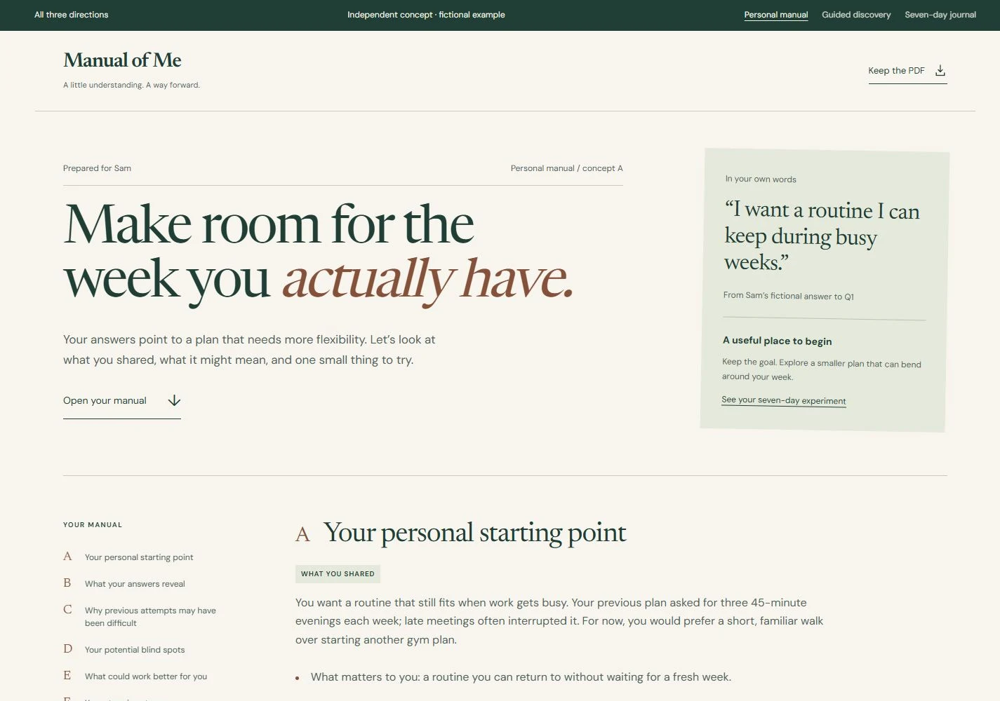
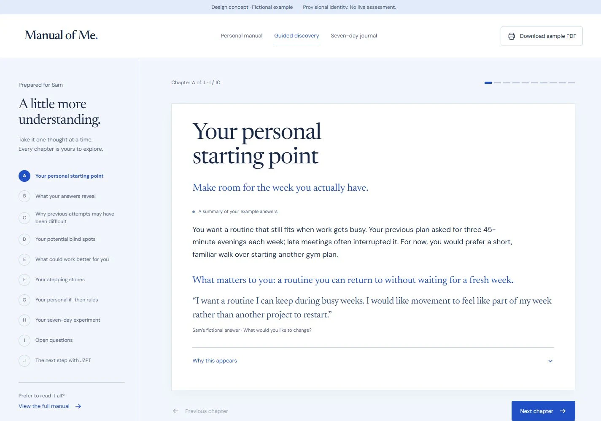
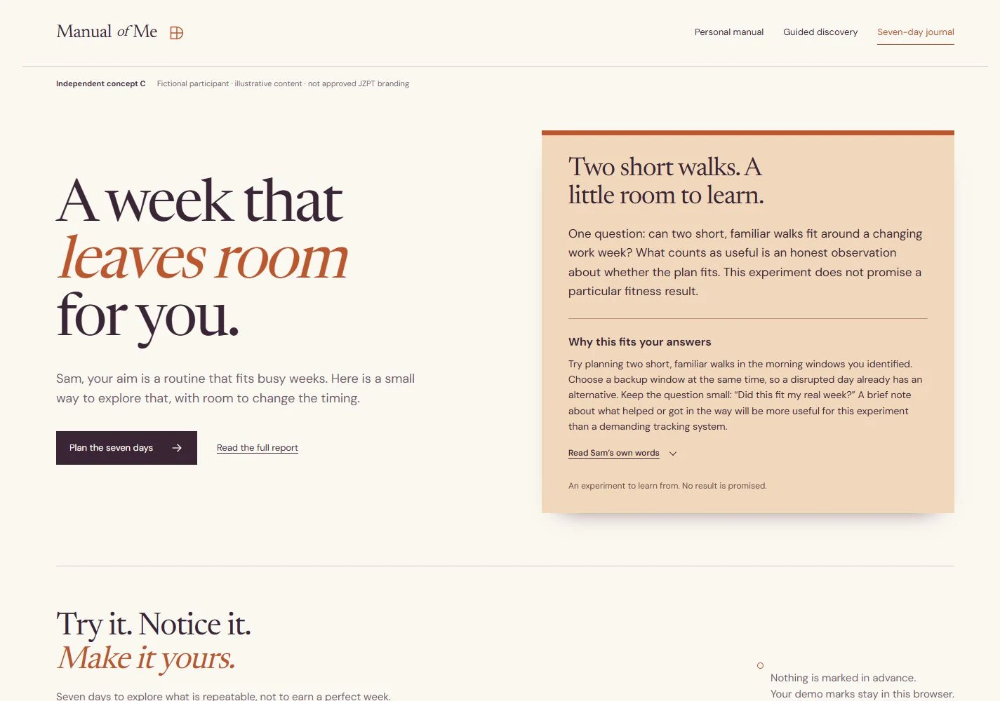

Personal manual
A calm, editorial report you can settle into. Continuous reading, thoughtful margins, and evidence beside the insight.
Explore the manual Best for depth and a report worth keeping.The same personal story. Three different ways to discover it.
Each direction follows Sam’s fictional answers through reflections, open questions and a small seven-day experiment. Explore the layouts, open the evidence, and choose what feels right.

A calm, editorial report you can settle into. Continuous reading, thoughtful margins, and evidence beside the insight.
Explore the manual Best for depth and a report worth keeping.
A focused, chapter-by-chapter experience. Less to read at once, with room to pause and inspect what supports each finding.
Explore the discovery Best for an easy first read on a phone.
The next step comes into focus. Explore your week, mark a sample action, and return to the evidence whenever you need it.
Explore the journal Best for turning an insight into something useful.All three use the same fictional participant and ten report sections. The choice changes how the story unfolds—not what the answers support.